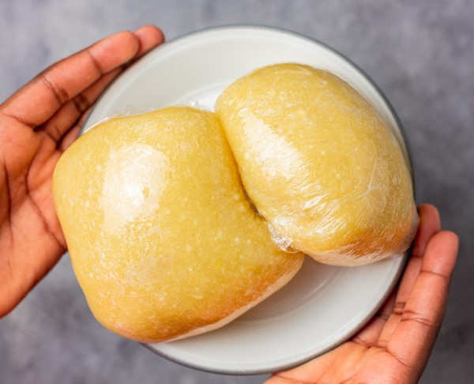

Eba

WHAT IS EBA?
Eba is a type of food staple (swallow) popularly eaten in Nigeria and by Nigerians all over the world. It is made with fried cassava called garri and hot boiling water to form a smooth stiff dough. It is best eaten with Nigerian soups such as Okra, Afang soup, Efo riro, Egusi soup and many more.
Garri comes in two forms, yellow garri which contains palm oil or white garri which is fried without palm oil.
INGREDIENTS
- Garri (Fried cassava)
- Water
- Cooking Oil (optional)
EQUIPMENT
- Electric kettle
- Wooden spoon (Omorogun)
- Pot
- Bowl
STEPS
- Bring water to a boil in a kettle, place a small pot on medium heat, carefully measure out 1 cup of hot boiling water and pour to the pot.
- Start by stirring in ⅓ cup of garri to the hot water with a wooden spoon. If the eba is still soft, sprinkle more garri until desired texture is achieved. Mould eba and serve immediately with Nigerian soup of choice